Chapter 2: Power Infrastructure¶
Power is the lifeblood of every data centre: if it stops for even a fraction of a second, servers crash. This chapter follows electricity from the grid and on-site substation through transformers, switchgear, UPS systems, batteries and generators all the way to the power supply inside each server. It explains redundancy, the huge new demands of AI racks, how sites connect to strained grids and buy nuclear power, and the safety rules that keep technicians alive.
2.1 Electricity Basics for Data Centres¶
Electricity is the flow of tiny charged particles through a wire, and a data centre is basically a machine that turns huge amounts of it into computing (and heat). Voltage is the 'push', current is the 'flow', and power is how much work they do together each second. A few simple formulas let you work out how big every cable, breaker and generator needs to be.

Think of it like…
Think of a garden hose: voltage is the water pressure, current is how many litres flow per second, and power is how hard the jet can push a toy boat across the pond.
Real-world example
Priya, a new technician at the fictional Northgate Data, is asked whether a 415 V three-phase, 32 A rack feed can carry a 20 kW AI server rack. She calculates √3 × 415 × 32 × 0.95 ≈ 21.9 kW at full rating. Because circuits should normally run at no more than 80% of their rating, the safe limit is about 17.5 kW, so she flags that the rack needs two feeds or a 63 A circuit.
How it works¶
- Voltage (V) pushes current (A) through a circuit; the electrical resistance or load decides how much current flows.
- Real power in watts (W) does useful work; apparent power in volt-amperes (VA) is what the cables and transformers must carry.
- Power factor (PF) = W ÷ VA; modern server power supplies have a PF close to 1.0.
- Most data-centre power is three-phase AC, which delivers more power per copper conductor than single-phase.
- Electronics turn AC into DC inside their power supplies, creating harmonics that the electrical design must cope with.
- Every watt the IT equipment uses ends up as heat that the cooling system must remove.
Who uses it
Electrical engineers, critical facilities technicians, data-centre designers and capacity planners use these basics every day.
Key takeaway
Memorise the three-phase power formula P = √3 × V(line-to-line) × I × PF; it appears in almost every data-centre interview and sizing question.
Going deeper
- Three-phase power is P = √3 × V(line-to-line) × I × PF, single-phase is P = V × I × PF; at 415 V each ampere of three-phase current carries about 0.72 kW at unity PF.
- Cable and breaker sizing considers continuous current, ambient temperature, cable grouping, voltage drop and prospective fault current, using tables in IEC 60364-5-52 or NEC Article 310.
- Switch-mode power supplies draw current in pulses, creating odd harmonics; triplen harmonics (3rd, 9th, 15th) add up in the neutral, which can then carry more current than a phase.
- Server power supplies use active power-factor correction to meet harmonic limits such as IEC 61000-3-2, so modern IT loads distort the supply far less than early-2000s equipment.
- Test instruments carry IEC 61010 measurement categories (CAT II-IV) for transient energy; switchboard work needs CAT III or CAT IV meters, never cheap household testers.
- Engineers start every task at the single-line diagram, which shows every source that can feed a point, including UPS batteries and generator backfeeds that may keep a circuit live.
Common mistakes & misconceptions
- Forgetting power factor: sizing in kW but buying a UPS rated in kVA can leave it short of real capacity.
- Loading a breaker to 100% continuously: plan for 80% unless the assembly is specifically rated for 100% continuous duty.
- Assuming an open breaker means a dead circuit: always test for absence of voltage, because other sources may backfeed.
Try it: Three-phase power and the 80% rule in Python¶
import math
v_ll = 415 # line-to-line volts (UK/EU hyperscale style)
amps = 32 # breaker rating per phase
pf = 0.95 # power factor
kw_full = math.sqrt(3) * v_ll * amps * pf / 1000
kw_safe = kw_full * 0.8 # continuous-load derating
print(f"Full rating: {kw_full:.1f} kW, safe continuous: {kw_safe:.1f} kW")
# Full rating: 21.9 kW, safe continuous: 17.5 kW
Key equipment, standards, metrics, vendors & tools¶
| Name | What it does | Example |
|---|---|---|
| Real, reactive and apparent power IEEE Std 1459; IEC 60050 · Concept · Current · Electrical |
Real power (kW) does work, reactive power (kVAR) shuttles back and forth, and apparent power (kVA) combines both and loads the cables. | A 1,000 kVA transformer feeding a load at power factor 0.9 can deliver about 900 kW of real power. |
| Power factor and PFC IEEE Std 1459; IEC 61000-3-2 · Metric · Current · Electrical |
The ratio of kW to kVA; server power supplies use active power-factor correction to stay around 0.95-0.99 at normal loads. | A rack at PF 0.98 draws only about 2% more current than a purely resistive load of the same kW. |
| Leading power factor Generator and UPS manufacturers' capability curves · Concept · Current · Electrical |
Lightly loaded IT power supplies can look slightly capacitive (leading PF), which some generators and UPS units handle poorly. | During commissioning a generator's voltage control struggles while carrying a lightly loaded hall with a leading power factor. |
| Line vs phase voltage IEC 60038; ANSI C84.1 · Concept · Current · Electrical |
In three-phase systems line-to-line voltage is √3 times line-to-neutral: 400/230 V, 415/240 V, 480/277 V and 208/120 V. | A 415 V three-phase rack PDU gives 240 V at each outlet wired line-to-neutral. |
| Phase balancing Electrical design and DCIM practice · Practice · Current · Electrical |
Spreading single-phase loads evenly across the three phases so no phase overloads and neutral current stays low. | A technician moves two servers from L1 to L3 after the rack PDU shows 14 A, 6 A and 5 A. |
| Frequency (Hz) IEC 60196 · Concept · Current · Electrical |
How many times per second AC reverses; 50 Hz in Europe and most of Asia, 60 Hz in the Americas. | Generators must hold frequency steady, or UPS systems will refuse to synchronise to their output. |
| Harmonics and THD IEEE 519; IEC 61000-3-12 · Concept · Current · Electrical |
Distorted currents from electronic loads, measured as total harmonic distortion; triplen harmonics add in neutrals and can overheat neutrals and transformers. | An engineer adds harmonic filters after measuring 25% current THD on a panel feeding older single-phase servers. |
| Ohm's law and power formula Basic electrical theory · Concept · Current · Electrical |
V = I × R links voltage, current and resistance; P = V × I × PF gives single-phase power. | A 230 V circuit feeding a 2.3 kW load at unity PF draws 10 A. |
| Continuous-load derating (80% rule) NFPA 70 (NEC) Article 210/215 · Practice · Current · Electrical |
Circuits feeding loads running three hours or more are normally loaded to no more than 80% of breaker rating. | A 30 A circuit is planned for a 24 A maximum continuous rack load. |
| Voltage drop IEC 60364-5-52; NEC informational notes (3% / 5%) · Concept · Current · Electrical |
Voltage lost along a cable because of its resistance; long or undersized runs leave equipment with too little voltage. | A 60 m rack feed is upsized one cable size to keep voltage drop under 3%. |
| Inrush current Equipment datasheets; breaker trip curves · Concept · Current · Electrical |
A brief surge, often several times normal current, when transformers or power supplies are first energised. | After maintenance, racks are powered on in stages so combined inrush does not trip the upstream breaker. |
| Single-line diagram (SLD) IEEE 315 / IEC 60617 graphical symbols · Document · Current · Electrical |
A simplified drawing of every source, transformer, breaker and feeder from grid to rack; the map for all electrical work. | Before switching, an engineer traces the A-side path on the SLD and matches every breaker label on site. |
| Clamp meter and multimeter Fluke, Megger, Hioki and others; IEC 61010 CAT ratings · Tool · Current · Electrical |
Clamp meters measure current without breaking the circuit; multimeters measure voltage and resistance; both are rated by measurement category. | A CAT III 1000 V clamp meter checks phase currents on a rack feed before new servers are added. |
2.2 The Utility Grid & Substations¶
Power stations make electricity far away, and the grid carries it at very high voltage over long distances, then steps it down in substations before it reaches users. Big data centres need so much power that they often have their own substation on site, fed by one or more high-voltage lines. Getting that connection is now one of the hardest and slowest parts of building a data centre.
Think of it like…
The grid is like a river system: huge rivers (transmission lines) carry water across the country, and dams and locks (substations) lower the level so smaller canals can deliver it to each town.
Real-world example
The fictional Riverbend Cloud campus plans 300 MW of IT load. The local utility agrees to build two 230 kV lines from different directions into a new on-site substation with three 100 MVA transformers stepping down to 34.5 kV. Each data hall gets two medium-voltage feeds, so the loss of one line or one transformer does not stop the campus. The connection takes four years, longer than building the halls themselves.
How it works¶
- Power stations generate electricity, which is stepped up to high voltage (for example 132-400 kV) for efficient long-distance transmission.
- Transmission lines carry power to grid substations, where transformers step it down to sub-transmission or distribution voltages.
- Large campuses take power directly at high voltage into an on-site substation owned by the utility or the operator.
- Two independent utility feeds from different substations or lines protect against a single line failure.
- Medium-voltage cables then distribute power around the campus to each building's transformers and switchgear.
Who uses it
Utility engineers, grid planners, data-centre power engineers and site-selection teams work on grid connections and substations.
Key takeaway
Know the voltage classes: low voltage up to 1 kV AC, medium voltage roughly 1-35 kV, high voltage above that (exact boundaries differ by country and standard).
Going deeper
- Grids transmit at high voltage because losses scale with current squared: 100 MW at 400 kV needs about 144 A per phase, versus about 5,250 A at 11 kV.
- Utilities plan to N-1 security, so the network survives losing any single line or transformer; large customers often fund extra circuits to obtain genuinely dual supplies.
- Large campuses commonly take 115-345 kV in North America or 110-400 kV in Europe into a dedicated substation, then distribute on site at medium voltage such as 33 kV or 34.5 kV.
- Large power transformers are custom-built, can weigh over 100 tonnes and have had multi-year lead times, so spares and standardised designs reduce restoration risk.
- Grid codes increasingly treat very large data-centre loads like power plants, requiring voltage and frequency ride-through, ramp-rate limits and data sharing with the grid operator.
- Protection relays, often communicating over IEC 61850, clear grid faults in tens of milliseconds; the data centre's UPS must still ride through the voltage dip a remote fault causes.
Common mistakes & misconceptions
- Assuming two incoming cables are independent: check they come from different substations along different routes.
- Underestimating connection timelines: grid studies, upgrades and transformer deliveries can take longer than building the halls.
- Expecting the utility to guarantee uptime: outages and voltage dips are normal grid events, which is why UPS and generators exist.
Try it: Why grids use high voltage: line current for the same 100 MW¶
import math
power_w = 100e6
for kv in (11, 33, 132, 400):
amps = power_w / (math.sqrt(3) * kv * 1000)
print(f"{kv:>4} kV -> {amps:,.0f} A per phase")
# Higher voltage = less current = thinner cables and lower losses (I²R)
Key equipment, standards, metrics, vendors & tools¶
| Name | What it does | Example |
|---|---|---|
| Transmission network TSOs / ISOs (e.g. PJM, ERCOT, National Grid, EirGrid) · System · Current · Electrical |
The high-voltage backbone (typically 110-765 kV) that moves bulk power from generators to regional substations. | A 400 kV overhead line carries power from a coastal wind farm to a city 200 km away. |
| Distribution network Utilities / DSOs / DNOs · System · Current · Electrical |
Lower-voltage networks that take power from grid substations to streets, factories and smaller data centres. | A 5 MW edge data centre connects to the local 11 kV distribution network. |
| Voltage classes (LV, MV, HV, EHV) IEC 60038; ANSI C84.1 · Standard · Current · Electrical |
Bands of voltage used to classify equipment; LV is up to 1 kV AC, MV up to roughly 35 kV, HV above. | A campus takes 132 kV (HV), distributes at 33 kV (MV) and feeds servers at 415 V (LV). |
| On-site substation Utility or owner, designed to IEEE / IEC standards · Facility · Current · Electrical |
A fenced yard or building with high-voltage breakers and transformers that steps grid power down for the campus. | A hyperscale campus builds a 230/34.5 kV substation inside its perimeter fence. |
| Power transformer (HV/MV) IEC 60076; IEEE C57 · Equipment · Current · Electrical |
A very large oil-filled transformer, often 50-200 MVA, stepping transmission voltage down to medium voltage. | Lead times for large power transformers stretched to two to four years during the 2020s demand boom. |
| Dual utility feeds Uptime Institute / TIA-942 design guidance · Practice · Current · Electrical |
Two separate incoming supplies, ideally from different grid substations, so one line fault does not cut power. | Harbourline Colo's site has feeds from north and south substations on separate routes. |
| Gas-insulated switchgear (GIS) IEC 62271-203; Siemens Energy, Hitachi Energy, GE Vernova · Equipment · Current · Electrical |
Compact high-voltage switchgear sealed in insulating gas, using far less space than open-air equipment. | A city-centre data centre uses indoor 132 kV GIS because there is no room for an outdoor yard. |
| SF6 alternatives EU F-gas Regulation (EU) 2024/573 · Technology · Emerging · Sustainability |
New insulating gases and vacuum technology replacing SF6, a very potent greenhouse gas used in switchgear. | A European operator specifies SF6-free medium-voltage switchgear to meet F-gas phase-out rules. |
| Interconnection agreement Utility / grid operator · Document · Current · Business |
The contract setting how much capacity a site may draw, when it connects, and who pays for grid upgrades. | Riverbend Cloud signs an agreement for 150 MW in 2027 rising to 300 MW in 2029. |
| Grid operators (TSO / ISO / RTO) e.g. PJM, ERCOT, CAISO, NESO (Great Britain), EirGrid · Organisation · Current · Business |
Organisations that balance supply and demand in real time and plan transmission for a region. | In Texas, ERCOT studies every large data-centre load before it can connect. |
| Revenue metering Utility; IEC 62053 / ANSI C12 · Equipment · Current · Business |
High-accuracy meters at the point of supply that measure energy for billing. | Monthly bills for a 40 MW site are based on the utility meter at the substation. |
| Fault ride-through Grid codes; NERC guidance · Concept · Emerging · Electrical |
Staying connected through short grid voltage dips instead of disconnecting; now being requested from large data-centre loads. | A utility asks a new AI campus to prove its UPS will not drop off the grid during a 100 ms dip. |
| Utility SCADA and protection Utility; IEC 61850 · System · Current · Electrical |
Remote monitoring, control and protective relays that isolate faults on the grid within fractions of a second. | A relay trips a faulty 132 kV line in 80 ms while the campus's second feed carries on. |
| N-1 contingency NERC TPL planning standards; national grid codes (e.g. GB SQSS) · Concept · Current · Electrical |
Planning rule that the network keeps supplying load after losing any one element, such as a line or transformer. | A substation with three 100 MVA transformers serves only about 200 MVA of firm load, keeping one in reserve. |
2.3 Medium & Low-Voltage Distribution¶
Inside the site, power travels at medium voltage to transformers near each building, which step it down to the low voltage that equipment uses. Switchgear and circuit breakers act as giant, smart switches and fuses that can turn sections on or off and cut power instantly if something goes wrong. This is the 'grey space' backbone that everything else hangs from.
Think of it like…
It is like a home's fuse box scaled up a thousand times: one main switch feeding many smaller switches, each protecting one branch of the house.
Real-world example
At the fictional Lakeside DC in Frankfurt, two 20 kV ring main units feed four 2,500 kVA cast-resin transformers that step down to 400 V. Each transformer feeds a main low-voltage switchboard with air circuit breakers. During a fault on one outgoing cable, the nearest MCCB trips within milliseconds while the upstream breakers stay closed, so only one PDU loses power and its racks switch to their B feed.
How it works¶
- Medium-voltage cables bring power to ring main units or MV switchgear at each building.
- Transformers step the voltage down to low voltage, for example 480 V in the US or 400 V in Europe.
- Main LV switchboards with air circuit breakers distribute power to UPS systems, cooling plant and building services.
- Protection relays and breaker trip units detect overloads and short circuits and open the right breaker.
- A coordination study makes sure the breaker nearest a fault trips first (selectivity), limiting the outage.
Who uses it
Electrical engineers, switchgear technicians, commissioning agents and critical facilities engineers design, test and maintain this equipment.
Key takeaway
Learn the common voltages: US 480/277 V and 208/120 V, Europe 400/230 V, and 415/240 V used by many hyperscale designs.
Going deeper
- Transformer impedance, often around 5-6% for large distribution units, limits fault current; a lower-impedance or larger transformer raises the kA rating needed downstream.
- Selective coordination uses time-current curves: downstream devices trip faster, upstream ones wait slightly longer, and a study checks every pair for overlaps across the system.
- Drawout air circuit breakers can be racked to test or disconnected positions, giving a visible isolation point and allowing quick replacement from a spare.
- Main-tie-main boards let either of two transformers feed both bus sections through a tie breaker, so one transformer can be maintained while loads stay energised.
- Equipment must be rated for the prospective short-circuit current at its location, calculated with IEC 60909 or IEEE methods and updated whenever the system changes.
- EU Ecodesign rules (Regulation 548/2014, amended by 2019/1783) set minimum efficiency levels for power transformers, pushing designs toward lower-loss cores and windings.
Common mistakes & misconceptions
- Fitting a bigger transformer without rechecking fault levels: downstream breakers may no longer interrupt faults safely.
- Changing trip settings without a coordination study, so a minor rack fault can trip a main board.
- Installing oil-filled transformers indoors without fire separation and oil containment.
Try it: Transformer full-load current on the low-voltage side¶
import math
kva = 2500
for v in (400, 415, 480):
i = kva * 1000 / (math.sqrt(3) * v)
print(f"{kva} kVA at {v} V -> {i:,.0f} A per phase")
# 2500 kVA at 400 V -> 3,608 A : that is why LV busbars are so large
Key equipment, standards, metrics, vendors & tools¶
| Name | What it does | Example |
|---|---|---|
| Oil-filled transformer IEC 60076; IEEE C57.12 · Equipment · Current · Electrical |
Transformer cooled and insulated by mineral or ester oil; efficient and long-lived, usually installed outdoors with oil containment. | A campus uses outdoor 3 MVA oil-filled units on concrete pads with bunds to catch any leaks. |
| Dry-type (cast-resin) transformer IEC 60076-11; IEEE C57.12.01 · Equipment · Current · Electrical |
Transformer with windings sealed in resin and cooled by air; safer indoors because there is no oil fire risk. | A city data centre installs indoor 2,000 kVA cast-resin transformers next to its switchboards. |
| K-rated transformer UL 1561 / UL 1562; IEEE C57.110 · Equipment · Current · Electrical |
A transformer built to tolerate the extra heating caused by harmonic currents from electronic loads. | An older facility uses K-13 rated transformers in its PDUs feeding hundreds of single-phase servers. |
| Medium-voltage switchgear IEC 62271-200; IEEE C37.20.2 · Equipment · Current · Electrical |
Metal-enclosed cabinets with vacuum circuit breakers that switch and protect circuits typically between 1 and 36 kV. | A 20 kV switchboard lets engineers isolate one transformer for maintenance without affecting others. |
| Ring main unit (RMU) IEC 62271-200; ABB, Schneider Electric, Siemens, Eaton · Equipment · Current · Electrical |
Compact MV switchgear on a cable ring, so a building can be fed from either direction. | If one 11 kV cable in the ring is damaged, the RMU is reconfigured to feed from the other side. |
| Main LV switchboard IEC 61439-2; UL 891 / UL 1558 · Equipment · Current · Electrical |
The main low-voltage distribution assembly after the transformer, feeding UPS, mechanical plant and building loads. | Each 400 V main switchboard has a 4,000 A incomer and twelve outgoing breakers. |
| Air circuit breaker (ACB) IEC 60947-2; UL 1066 · Component · Current · Electrical |
A large breaker, typically 800-6,300 A, used as switchboard incomers and big feeders, often drawout for maintenance. | A technician racks out a 3,200 A ACB to test its trip unit during an annual shutdown. |
| Moulded-case circuit breaker (MCCB) IEC 60947-2; UL 489 · Component · Current · Electrical |
A medium breaker in a plastic case, typically up to about 1,600 A, protecting feeders to PDUs and panels. | A 250 A MCCB protects the feeder from the UPS output board to a floor PDU. |
| Miniature circuit breaker (MCB) IEC 60898-1; UL 489 · Component · Current · Electrical |
A small breaker, usually up to 125 A, protecting final circuits such as individual rack feeds. | Each rack whip in a European RPP is protected by a 32 A three-pole MCB. |
| Protection relay IEC 60255; IEEE C37.90; SEL, ABB, Siemens, Schneider · Component · Current · Electrical |
An electronic device that measures current and voltage and tells breakers to trip on overloads, faults or earth leakage. | A relay on the MV feeder trips the breaker after detecting an earth fault on a transformer cable. |
| Selective coordination NFPA 70 (NEC) 700.32/708.54; IEEE 242 (Buff Book) · Practice · Current · Electrical |
Setting breakers so only the one nearest a fault opens, keeping the rest of the system running. | A coordination study adjusts ACB delays so a rack fault never trips the main switchboard. |
| Short-circuit rating IEC 60909; IEEE 551 (Violet Book) · Metric · Current · Electrical |
The maximum fault current equipment can safely withstand or interrupt, expressed in kA. | Switchboards fed by large transformers may need 65 kA or 100 kA rated breakers. |
| Common LV voltages ANSI C84.1; IEC 60038 · Concept · Current · Electrical |
US sites typically use 480/277 V and 208/120 V; Europe uses 400/230 V; many hyperscalers use 415/240 V. | A US colo feeds racks at 208 V three-phase, while its UK sister site uses 400/230 V. |
| Electrical power monitoring system (EPMS) Schneider Electric EcoStruxure, Siemens, Eaton, ABB · Software · Current · Operations |
Software and meters that record voltages, currents, breaker states and power quality across the electrical system. | EPMS alarms show a breaker trip and capture the waveform so engineers can find the cause. |
| Main-tie-main switchboard Common LV/MV design (IEC 61439; UL 891) · Equipment · Current · Electrical |
Two incoming transformers with a normally open tie breaker, letting either source feed both halves of the board. | Transformer T1 is serviced while the tie breaker closes and T2 carries both bus sections. |
2.4 Uninterruptible Power Supplies (UPS)¶
A UPS sits between the mains supply and the IT equipment and keeps power flowing, without even a flicker, when the grid fails. It uses stored energy (usually batteries, sometimes a spinning flywheel) to bridge the gap until generators start, typically in 10-15 seconds. Many UPS designs also clean up the power, removing spikes, dips and noise.
The three UPS types (IEC 62040-3)
| Standby (VFD) | Line-interactive (VI) | Double conversion (VFI) | |
|---|---|---|---|
| Normal path | Mains straight to load | Mains via regulating transformer | Rectifier → DC → inverter |
| On mains failure | Brief transfer (ms) | Brief transfer (ms) | Zero break |
| Conditioning | Minimal | Voltage regulation | Full isolation from mains |
| Typical size | Under a few kVA | Small, rack-mount | 10 kVA to multi-MW |
| Typical use | Home and desktop | Branch office, edge rack | Data halls |
Only double conversion gives zero transfer time and full isolation, which is why data halls use it.
Think of it like…
A UPS is like a bridge over a river: the grid is the road on one bank, the generator the road on the other, and the UPS lets traffic cross the gap without stopping.
Real-world example
At the fictional Meadowbank colo, a storm causes a utility outage at 2:14 a.m. The double-conversion UPS instantly switches to battery with zero break, carrying 1.2 MW. The generators start in 9 seconds, the ATS transfers after a short stabilisation delay, and the UPS returns to normal operation drawing from the generators; the batteries used about 40 seconds of their 8-minute autonomy.
How it works¶
- Normal mode: incoming AC is converted (rectified) to DC, which charges the batteries and feeds an inverter.
- The inverter creates clean new AC for the IT load, isolating it from grid disturbances (double conversion).
- If the input fails, the batteries already connected to the DC bus keep the inverter running with no break.
- When generators or the grid return, the rectifier takes over and recharges the batteries.
- If the UPS itself has a problem, a static bypass switches the load straight to the input supply in milliseconds.
Who uses it
Critical facilities engineers, UPS field service engineers and electrical designers specify, maintain and test UPS systems.
Key takeaway
Know the IEC 62040-3 classes: VFI (double-conversion online), VI (line-interactive) and VFD (standby/offline).
Going deeper
- IEC 62040-3 codes such as VFI-SS-111 describe input dependency (VFI, VI or VFD), output waveform in normal and battery modes, and dynamic output performance during load and mode changes.
- IT power supplies ride through very short interruptions: the ITI (CBEMA) curve expects equipment to tolerate total loss of voltage for about 20 ms, far shorter than a generator start.
- Modern transformerless double-conversion modules reach roughly 96-97% efficiency, while eco or energy-saver modes reach about 99% by running on bypass with the inverter ready to take over.
- UPS systems are sized for the critical load plus redundancy, with battery autonomy usually 5-10 minutes at full load and margin for end-of-life battery capacity.
- An external maintenance bypass wrapped around the whole UPS system is essential for concurrent maintainability, letting engineers isolate every module without dropping load.
- Some hyperscale designs replace central UPS with in-rack battery backup units or distributed UPS, accepting shorter runtimes in exchange for fewer conversion losses.
Common mistakes & misconceptions
- Assuming every UPS is double conversion: small standby and line-interactive units have a transfer gap some equipment cannot tolerate.
- Operating a maintenance bypass out of sequence: one wrong step can drop the load, so always follow the MOP.
- Loading a redundant module group beyond its N capacity, so one module failure overloads the rest.
Try it: Annual cost of UPS losses: double conversion vs eco-mode¶
load_kw = 1000
price_per_kwh = 0.15 # currency units
for mode, eff in (("double conversion", 0.965), ("eco-mode", 0.99)):
loss_kw = load_kw / eff - load_kw
cost = loss_kw * 8760 * price_per_kwh
print(f"{mode:18}: {loss_kw:5.1f} kW lost, about {cost:,.0f} per year")
Key equipment, standards, metrics, vendors & tools¶
| Name | What it does | Example |
|---|---|---|
| Double-conversion online UPS IEC 62040-3 (VFI class) · Equipment · Current · Electrical |
Converts AC to DC and back again continuously, giving the load clean power and zero transfer time on mains failure. | Almost every enterprise and colocation data hall runs on double-conversion UPS modules. |
| Line-interactive UPS IEC 62040-3 (VI class) · Equipment · Current · Electrical |
Feeds the load from the mains through a regulating transformer and switches to its inverter when mains fail. | A small branch-office comms rack uses a 3 kVA line-interactive UPS. |
| Standby (offline) UPS IEC 62040-3 (VFD class) · Equipment · Current · Electrical |
Passes mains straight through and only starts its inverter during an outage, with a brief transfer time. | A home router and PC sit on a cheap 600 VA standby UPS. |
| IEC 62040-3 IEC (edition 3.0, 2021) · Standard · Current · Electrical |
International standard defining UPS performance and test methods, including the VFI, VI and VFD classes. | A tender requires 'VFI-SS-111' classification, meaning double conversion with best output performance. |
| Eco-mode UPS manufacturers; IEC 62040-3 · Practice · Current · Sustainability |
Runs the load on the bypass path while the inverter waits, raising efficiency to about 99% at slightly more risk. | An operator enables eco-mode on non-critical halls, saving hundreds of thousands in energy each year. |
| Modular UPS Schneider Electric, Vertiv, Eaton, ABB, Huawei and others · Equipment · Current · Electrical |
A UPS frame filled with hot-swappable power modules, so capacity and redundancy grow by adding modules. | A 1.2 MW frame starts with six 200 kW modules and adds a seventh for N+1. |
| Static bypass IEC 62040-3 · Component · Current · Electrical |
An electronic switch that moves the load directly to the input supply in milliseconds if the inverter fails or is overloaded. | A server inrush overload causes the UPS to transfer to static bypass, then return automatically. |
| Maintenance bypass UPS and switchgear manufacturers · Component · Current · Electrical |
A manual switch path that lets engineers fully isolate a UPS for repair while the load stays powered. | Following a MOP, the engineer closes the maintenance bypass before replacing a UPS capacitor bank. |
| Rotary UPS / DRUPS Hitec Power Protection, Piller, Euro-Diesel · Equipment · Current · Electrical |
A motor-generator with a flywheel coupled to a diesel engine, giving ride-through and backup without large battery rooms. | A Dutch colo uses diesel rotary UPS units that combine UPS and generator in one machine. |
| Flywheel UPS Piller, Vertiv and others · Equipment · Current · Electrical |
Stores energy in a spinning wheel instead of batteries, giving roughly 15-60 seconds of ride-through. | A flywheel provides 20 seconds of bridging, enough for generators to start and stabilise. |
| Autonomy (runtime) UPS design practice · Metric · Current · Electrical |
How long the stored energy can carry the full load; data centres commonly design for about 5-10 minutes. | An operator chooses 6 minutes of battery autonomy at full design load, plus ageing margin. |
| UPS efficiency IEC 62040-3; EU Code of Conduct on AC UPS · Metric · Current · Sustainability |
Output power divided by input power; modern double-conversion units reach roughly 96-97.5%. | Improving efficiency from 94% to 97% on a 2 MW load saves around 65 kW of losses. |
| Major UPS vendors Schneider Electric, Vertiv, Eaton, ABB, Huawei, Socomec, Mitsubishi Electric · Company · Current · Business |
Leading manufacturers of large three-phase UPS systems for data centres. | Vertiv sells the Liebert range; Schneider Electric sells the Galaxy range. |
| ITI (CBEMA) curve Information Technology Industry Council (ITIC); originally CBEMA · Standard · Current · Electrical |
A chart of voltage dips, interruptions and surges that IT power supplies should tolerate without malfunction. | A 10 ms total loss of voltage falls inside the curve, so a correctly designed server should keep running. |
| Power quality events IEEE 1159; EN 50160 · Concept · Current · Electrical |
Sags, swells, transients, interruptions and harmonics that a UPS must filter out or ride through. | The EPMS logs a 120 ms voltage sag from a distant grid fault; the UPS briefly ran on battery. |
2.5 Batteries & Energy Storage¶
Batteries are the energy store behind most UPS systems, holding enough power for a few minutes until generators take over. Older sites use lead-acid batteries; newer ones increasingly use lithium-ion, which is smaller, lighter and lasts longer but needs careful fire-risk management. Batteries are also one of the most common causes of UPS failures, so they are watched closely.
UPS battery chemistries
| VRLA lead-acid | Lithium-ion LFP | Lithium-ion NMC | |
|---|---|---|---|
| Design life | ~5-10 years | ~15 years | ~10-15 years |
| Footprint | Largest, heaviest | Much smaller, lighter | Smallest, lightest |
| Thermal runaway | Low (vents hydrogen) | Lower than NMC | Highest of the three |
| Monitoring | Add-on block monitoring | Built-in BMS | Built-in BMS |
| Trend | Large installed base | Increasingly the default | Less common in new UPS |
Lithium saves space and lasts longer, but every chemistry needs monitoring and fire-code compliance.
Think of it like…
A UPS battery string is like a car's spare fuel can: you hope never to need it, but you check it regularly, because finding it empty in an emergency is the worst moment to learn.
Real-world example
The fictional Orchard Data replaces 640 VRLA lead-acid blocks with lithium iron phosphate cabinets. The battery room footprint drops by about 60%, and the design life rises from about 5 years to 15. The new system has a battery management system that reports every cell's voltage and temperature, and the room is fitted with gas detection and protection designed to NFPA 855.
How it works¶
- Batteries are wired in series 'strings' to reach the UPS DC bus voltage, often several hundred volts.
- Several strings in parallel provide the energy needed for the required runtime and add redundancy.
- Monitoring systems track voltage, internal resistance and temperature of each block or cell.
- Temperature control matters: lead-acid life roughly halves for every 8-10 °C above 25 °C.
- Fire codes set rules on spacing, ventilation, detection and suppression for large battery systems.
Who uses it
Critical facilities technicians, battery service engineers, fire-safety engineers and UPS specialists work with data-centre batteries.
Key takeaway
Remember the chemistry trade-off: LFP is safer and longer-lasting, NMC is more energy-dense; both need thermal-runaway protection.
Going deeper
- Lead-acid UPS batteries are sized from makers' constant-power discharge tables to an end voltage, typically about 1.67-1.75 V per cell for short UPS runtimes.
- Available capacity depends on discharge rate and temperature: a battery delivers less energy at a five-minute rate than at a ten-hour rate, so amp-hour ratings alone mislead.
- Lead-acid life falls sharply with heat; a common rule is about half the life lost for every 8-10 °C sustained above 25 °C, so battery rooms are kept cool.
- Lithium systems carry a built-in BMS, and codes such as NFPA 855 and the International Fire Code set quantity limits, separation and detection, informed by UL 9540A test results.
- Internal resistance (ohmic) trending spots weakening blocks between discharge tests; a value rising well above its baseline triggers investigation or replacement.
- Strings are normally replaced as a set near 80% capacity, because mixing new and aged blocks causes imbalance and early failures.
Common mistakes & misconceptions
- Confusing a lithium battery's BMS with the building management system: same acronym, completely different jobs.
- Judging health by float voltage alone: a block can look normal yet fail under load; trend resistance and discharge test.
- Letting battery rooms run warm to save cooling energy, which shortens lead-acid life dramatically.
Try it: Rough UPS battery runtime estimate¶
load_kw = 800 # IT load on the UPS
inverter_eff = 0.95
usable_kwh = 120 # usable battery energy at this discharge rate
ageing_margin = 0.8 # plan for end-of-life capacity
minutes = usable_kwh * ageing_margin / (load_kw / inverter_eff) * 60
print(f"Estimated runtime: {minutes:.1f} minutes")
# Real sizing uses the maker's constant-power discharge tables
Key equipment, standards, metrics, vendors & tools¶
| Name | What it does | Example |
|---|---|---|
| VRLA battery IEC 60896-21/22; IEEE 1188 · Component · Current · Electrical |
Valve-regulated lead-acid battery, sealed and maintenance-free; the traditional UPS battery with a design life of about 5-10 years. | Rows of 12 V VRLA blocks on steel racks feed a 500 kVA UPS. |
| Flooded (wet-cell) lead-acid IEC 60896-11; IEEE 450 · Component · Legacy · Electrical |
Open lead-acid cells with liquid electrolyte that need topping up and ventilation; very long life but bulky. | A telecom exchange still runs flooded cells that technicians inspect and water each quarter. |
| Lithium iron phosphate (LFP) UL 1973; IEC 62619 · Component · Current · Electrical |
Lithium-ion chemistry with good thermal stability and long cycle life; increasingly the default for new UPS batteries. | A colo specifies LFP cabinets for a 15-year life and a smaller battery room. |
| Lithium NMC UL 1973; IEC 62619 · Component · Current · Electrical |
Nickel-manganese-cobalt lithium-ion chemistry with high energy density but higher thermal-runaway risk than LFP. | Some early lithium UPS cabinets used NMC cells to save floor space. |
| Nickel-zinc battery ZincFive · Component · Emerging · Electrical |
Water-based chemistry with high power density for short runtimes and no thermal runaway in the lithium sense. | An operator pilots nickel-zinc cabinets for one-minute ride-through on a high-density hall. |
| Supercapacitor Various manufacturers · Component · Emerging · Electrical |
Stores energy electrostatically; delivers very fast bursts for seconds, useful for smoothing rapid AI load swings. | A rack power shelf includes capacitor storage to absorb GPU power spikes lasting milliseconds. |
| Battery monitoring system Vertiv, Eaton, Schneider Electric, specialist vendors · System · Current · Operations |
Sensors on every battery block or cell reporting voltage, internal resistance and temperature to spot failing units early. | Monitoring flags one block with rising resistance, and it is replaced before an outage. |
| Battery management system (BMS) Lithium battery manufacturers; UL 1973 · System · Current · Electrical |
Electronics built into lithium batteries that balance cells and disconnect them if limits are exceeded. | The BMS opens a contactor when a module overheats, isolating it from the string. |
| Thermal runaway UL 9540A; NFPA 855 · Concept · Current · Facilities |
A self-heating chain reaction in a cell that can release flammable gas and spread fire to neighbouring cells. | Fire engineers use UL 9540A test data to set spacing between lithium cabinets. |
| NFPA 855 National Fire Protection Association · Standard · Current · Facilities |
US standard for installing stationary energy storage systems, covering size limits, spacing, detection and suppression. | A fire marshal checks the lithium UPS room against NFPA 855 before approving occupancy. |
| UL 9540 / UL 9540A UL Solutions · Standard · Current · Facilities |
UL 9540 certifies energy storage systems; UL 9540A is the test method for thermal-runaway fire propagation. | A vendor shares UL 9540A results showing fire did not spread between modules. |
| Battery string IEEE 485 (lead-acid sizing) · Concept · Current · Electrical |
Batteries connected in series to reach the required DC voltage; several strings run in parallel. | A UPS uses four parallel strings of forty 12 V blocks each. |
| Battery end-of-life IEEE 1188; IEEE 450 · Concept · Current · Operations |
A battery is typically considered at end of life when its capacity falls to about 80% of rated. | Discharge testing shows 78% capacity, so the string is scheduled for replacement. |
| Discharge (capacity) test IEEE 450 (vented lead-acid); IEEE 1188 (VRLA) · Procedure · Current · Operations |
Discharging a string at a controlled rate to measure its real capacity against rating; the definitive battery health check. | A string tested at its 15-minute rate lasts 13 minutes, showing roughly 87% capacity. |
2.6 Generators, Fuel & Transfer Switching¶
Standby generators are big engines, usually diesel, that make electricity when the grid fails and can run for days if fuel is delivered. Transfer switches decide which source feeds the building and move the load between them automatically. Together with the UPS, they make sure a utility outage never reaches the servers.

Think of it like…
If the UPS is a sprinter that covers the first few seconds, the generator is the marathon runner who takes over and keeps going as long as you keep feeding it.
Real-world example
The fictional Granite Peak data centre has eight 2.5 MW diesel generators in N+1 with 48 hours of fuel on site. During a monthly test, the generators start, synchronise on the paralleling switchgear and carry the building for an hour. A fuel polishing system cleans the 200,000 litres of stored diesel, and an annual load-bank test runs each engine at full load for four hours to prevent wet stacking.
How it works¶
- The ATS or switchgear controls detect a utility failure or out-of-tolerance voltage.
- Generators receive a start signal and reach speed and voltage, typically within about 10 seconds.
- In paralleled systems, generators synchronise onto a common bus before taking load.
- Transfer switches move the load to generator power; the UPS bridges the gap from batteries.
- When the utility is stable again, the load transfers back and generators cool down before stopping.
Who uses it
Generator technicians, critical facilities engineers, fuel suppliers and environmental permit specialists work on standby power.
Key takeaway
Know the ratings: emergency standby, prime and continuous under ISO 8528-1, and that data-centre ratings allow unlimited hours at a set average load when the grid is down.
Going deeper
- NFPA 110 classifies emergency power systems by Type (seconds to restore power, e.g. Type 10) and Class (hours of fuel at rated load, e.g. Class 48), common language in US specifications.
- On-site fuel autonomy targets commonly range from 24 to 72 hours, backed by priority refuelling contracts with more than one supplier for long grid outages.
- Running diesels lightly loaded causes wet stacking, unburnt fuel building up in the exhaust; testing at meaningful load and annual load-bank runs prevent it.
- ISO 8528-5 performance classes (G1-G4) set how far voltage and frequency may deviate during load steps; data-centre specifications usually call for the tighter classes.
- Large campuses parallel generators onto MV buses such as 11 kV or 13.8 kV to share load, add redundancy and maintain one machine while others run.
- Air permits often cap annual testing hours and set emission limits; HVO fuel and gas engines are adopted partly to cut emissions and local opposition.
Common mistakes & misconceptions
- Testing generators without load: no-load runs prove little and cause wet stacking; use building load or load banks.
- Neglecting fuel quality: contaminated diesel is a classic cause of generator failure during long outages.
- Forgetting the mechanical plant: if cooling is not on generator-backed power, IT overheats even though servers stay powered.
Try it: Generator fuel burn and on-site autonomy¶
gens = 8
load_kw_each = 1800 # average load per running generator
litres_per_kwh = 0.27 # rough diesel figure near full load; check the datasheet
stored_litres = 200_000
burn_l_per_h = gens * load_kw_each * litres_per_kwh
hours = stored_litres / burn_l_per_h
print(f"Burn: {burn_l_per_h:,.0f} L/h, autonomy: {hours:.0f} hours")
Key equipment, standards, metrics, vendors & tools¶
| Name | What it does | Example |
|---|---|---|
| Diesel standby generator Caterpillar, Cummins, Rolls-Royce mtu, Kohler (Rehlko), Mitsubishi Heavy Industries · Equipment · Current · Electrical |
Diesel engine coupled to an alternator, typically 1-3.5 MW per unit in large data centres. | A 50 MW campus installs twenty-four 2.5 MW generators in enclosures on its yard. |
| ISO 8528-1 ratings ISO 8528-1:2018 · Standard · Current · Electrical |
Defines generator ratings such as emergency standby (ESP), prime (PRP), continuous (COP) and data-centre power (DCP). | A specification asks for DCP-rated generators rather than standby-only ratings. |
| Data-centre continuous / power rating ISO 8528-1:2018 (DCP); manufacturers' DCC ratings · Concept · Current · Electrical |
A rating allowing unlimited running hours at a stated load while the utility is unavailable, matching data-centre needs. | Cummins and others publish data-centre ratings so a site can run generators through week-long grid outages. |
| HVO renewable diesel EN 15940 paraffinic diesel · Material · Current · Sustainability |
Hydrotreated vegetable oil, a drop-in diesel replacement made from waste fats and oils, cutting lifecycle carbon emissions. | A UK colo switches its generator fuel from fossil diesel to HVO without engine changes. |
| Natural gas generator Caterpillar, Cummins, INNIO Jenbacher, Wärtsilä · Equipment · Current · Electrical |
Engine fuelled by pipeline gas; cleaner exhaust than diesel but slower to accept large load steps. | A campus uses gas engines for long-duration backup and diesel units for fast start. |
| Fuel storage (day tanks and bulk tanks) NFPA 30 / NFPA 110; local codes · Equipment · Current · Facilities |
Bulk tanks hold days of fuel; small day tanks next to each engine feed it directly. | A site stores 48 hours of fuel in underground bulk tanks plus a 2-hour day tank per generator. |
| Fuel polishing Fuel maintenance practice; ASTM D975 / EN 590 fuel specs · Procedure · Current · Operations |
Circulating and filtering stored diesel to remove water, sludge and microbial growth that could clog engines. | A polishing skid runs weekly, and quarterly fuel samples are lab-tested. |
| Load bank testing NFPA 110; manufacturer guidance · Procedure · Current · Operations |
Running generators at high load on resistive banks to prove capacity and burn off deposits from light running ('wet stacking'). | Each generator runs four hours at 100% on a trailer-mounted load bank every year. |
| EPA Tier 2 / Tier 4 emissions US EPA 40 CFR Part 60 Subpart IIII; Part 1039 · Regulation · Current · Sustainability |
US engine emission limits; emergency-only engines commonly meet Tier 2, while non-emergency use usually needs Tier 4 aftertreatment. | A Virginia site's air permit limits each emergency generator's testing hours per year. |
| Automatic transfer switch (ATS) UL 1008; IEC 60947-6-1 · Equipment · Current · Electrical |
Automatically moves a load from utility to generator supply and back, typically in seconds. | When the grid fails, the ATS switches the mechanical plant to the generator bus. |
| Open vs closed transition UL 1008; utility interconnection rules · Concept · Current · Electrical |
Open transition breaks one source before making the other; closed transition briefly parallels both for a seamless return. | A closed-transition retransfer avoids a second blip when the site returns to grid power. |
| Static transfer switch (STS) IEC 62310; UL 1008 · Equipment · Current · Electrical |
Electronic switch using thyristors to move a load between two live sources within about a quarter cycle. | An STS feeds single-corded network gear from either the A or B UPS. |
| Paralleling switchgear Eaton, ASCO (Schneider Electric), Russelectric (Siemens), ABB · Equipment · Current · Electrical |
Switchgear and controls that synchronise several generators onto one bus and share load between them. | Eight generators parallel onto a 13.8 kV bus, shedding one if load is low. |
| Generator step-load acceptance ISO 8528-5 · Metric · Current · Electrical |
How much sudden load a generator can accept without voltage and frequency dipping too far. | A gas engine accepting only 25% steps needs UPS load ramping to avoid stalling. |
| NFPA 110 National Fire Protection Association · Standard · Current · Electrical |
US standard for emergency and standby power systems, defining Type (start time), Class (runtime) and testing requirements. | A specification calls for a Type 10, Class 48 system: power within 10 seconds and 48 hours of fuel. |
2.7 Power Distribution to the Rack¶
After the UPS, power still has to reach hundreds of racks and thousands of servers. It travels through floor-standing power distribution units, panels or overhead busbars, then flexible cables ('whips') into the power strips inside each rack. Most servers have two power supplies plugged into two separate feeds, A and B, so losing one feed does not switch them off.
Think of it like…
It is like a city's water mains: big pipes under the main road (busway), smaller pipes down each street (whips) and finally the taps in each kitchen (rack PDU outlets).
Real-world example
At the fictional Bluewater Colo, each row has two overhead busways, one from UPS A and one from UPS B. When a customer moves in, a technician clicks a plug-in tap-off unit onto each busway and drops a 32 A three-phase whip into the rack. Each rack has two switched, metered rack PDUs, and every dual-corded server plugs one supply into each, so a busway shutdown for maintenance causes no downtime.
How it works¶
- UPS output feeds floor PDUs (often with a transformer) or overhead busway running along each row.
- Remote power panels or busway tap-off boxes provide individually protected circuits for each rack.
- A whip (flexible cable with an industrial connector) runs from the breaker to the rack.
- Rack PDUs distribute power to IEC C13 or C19 outlets and can meter or switch each one.
- Dual-corded servers draw from both A and B rack PDUs, sharing the load and surviving the loss of either.
Who uses it
Data-centre technicians, installation electricians, colocation customer engineers and capacity planners handle rack power daily.
Key takeaway
Size A/B pairs so either feed alone can carry the whole rack within its 80% limit, which means about 40% per side in normal running.
Going deeper
- Typical rack feed sizes: 230 V 32 A single-phase ≈ 7.4 kVA; 400 V 32 A three-phase ≈ 22 kVA; 208 V 30 A three-phase ≈ 10.8 kVA, all before the 80% continuous derating.
- Each feed of an A/B pair normally carries half the rack but must carry it all alone, so with the 80% rule each side is planned at no more than about 40% in normal running.
- Busway tap-off boxes carry their own breakers and often metering, and many systems allow them to be added while the busway stays live, speeding changes.
- Intelligent rack PDUs report inlet, phase or outlet power over SNMP, Modbus or web APIs into DCIM, supporting capacity planning, customer billing and remote power cycling.
- Denser racks move to 415 V or 480 V three-phase feeds and 60-63 A circuits, or to OCP-style power shelves feeding a DC busbar instead of many individual cords.
- US floor PDUs often step 480 V down to 208/120 V; distributing at 415/240 V removes that transformer stage and its losses.
Common mistakes & misconceptions
- Plugging both power supplies into the same rack PDU: the server then has no feed redundancy at all.
- Loading each side of an A/B pair above about 40%: if one feed fails, the survivor exceeds its limit and may trip.
- Ignoring phase balance on three-phase rack PDUs, which strands capacity on one phase while another overloads.
Try it: Check an A/B rack pair stays safe if one side fails¶
rack_load_kw = 14.0
pdu_capacity_kw = 22.0 # e.g. 400 V, 32 A three-phase
safe_limit = pdu_capacity_kw * 0.8
normal_each = rack_load_kw / 2
print(f"Normal: {normal_each:.1f} kW per side")
print("One side fails ->", rack_load_kw, "kW on survivor;",
"OK" if rack_load_kw <= safe_limit else "OVERLOAD RISK")
Key equipment, standards, metrics, vendors & tools¶
| Name | What it does | Example |
|---|---|---|
| Floor-standing PDU Vertiv, Schneider Electric, Eaton · Equipment · Current · Electrical |
A cabinet in the data hall, often with an isolation transformer, that steps voltage and feeds many rack circuits. | A 300 kVA PDU converts 480 V to 208/120 V and feeds 84 rack breakers. |
| Remote power panel (RPP) Vertiv, Schneider Electric, Eaton · Equipment · Current · Electrical |
A slim cabinet of branch breakers placed near racks, fed from a PDU, to shorten cable runs. | Two RPPs at the end of each row supply all 20 racks in that row. |
| Overhead busway Legrand (Starline), Vertiv, Schneider Electric, Siemens, Eaton · System · Current · Electrical |
Enclosed overhead busbars running along a row; plug-in tap-off units feed racks without new cabling. | Adding a rack takes minutes: clip a tap-off box onto the busway and connect the whip. |
| Whip Installation practice; NFPA 70 / IEC 60364 · Component · Current · Electrical |
A flexible pre-made power cable with a connector, linking a breaker or busway tap-off to a rack PDU. | A 3 m whip with an IEC 60309 32 A plug drops from the busway to the rack top. |
| Basic and metered rack PDU APC (Schneider Electric), Vertiv Geist, Raritan and Server Technology (Legrand), Eaton · Equipment · Current · IT |
Basic PDUs simply distribute power; metered PDUs also display or report total current so you can avoid overloads. | A technician reads 11 A on the metered PDU's display before adding a new server. |
| Switched and intelligent rack PDU APC (Schneider Electric), Vertiv Geist, Raritan, Server Technology, Eaton · Equipment · Current · IT |
Networked PDUs that measure each outlet and can switch outlets on or off remotely via web, SNMP or Redfish. | An engineer remotely power-cycles a hung server through the PDU's web interface. |
| IEC 60320 C13/C14 IEC 60320-1 · Standard · Current · IT |
The common server power connector pair rated 10 A (15 A in North America); C13 on the cord, C14 on the device. | A 1U server's power cord has a C13 connector plugging into the PSU's C14 inlet. |
| IEC 60320 C19/C20 IEC 60320-1 · Standard · Current · IT |
Larger 16 A (20 A in North America) connector pair used by high-power servers, GPU systems and switches. | A GPU server's 3 kW power supplies use C19/C20 cords. |
| IEC 60309 industrial connectors IEC 60309-1/-2 · Standard · Current · Electrical |
Colour-coded industrial plugs; blue for about 230 V and red for 400 V three-phase, in 16, 32, 63 and 125 A sizes. | European racks are fed by red 5-pin 32 A IEC 60309 plugs. |
| NEMA L6-30 / L21-30 NEMA WD 6 · Standard · Current · Electrical |
North American twist-lock plugs: L6-30 is 250 V single-phase 30 A; L21-30 is 120/208 V three-phase 30 A. | A US colo offers customers either L6-30 or L21-30 whips per rack. |
| A/B feeds and dual-corded equipment Uptime Institute; TIA-942 · Practice · Current · Electrical |
Two independent power paths to each rack; servers with two power supplies connect one to each. | When UPS A is shut down for maintenance, every server keeps running on its B supply. |
| Rack-mount ATS APC (Schneider Electric), Vertiv, Eaton · Equipment · Current · IT |
A small transfer switch in the rack letting single-corded equipment use both A and B feeds. | An old single-PSU firewall is plugged into a rack ATS fed by both PDUs. |
| 80 PLUS efficiency levels CLEAResult 80 PLUS programme · Certification · Current · Sustainability |
Certifies power supply efficiency at several loads, from Bronze through Gold and Platinum up to Titanium. | Titanium server PSUs reach roughly 96% efficiency at half load. |
| CRPS / M-CRPS power supply Intel CRPS; OCP M-CRPS specification · Standard · Current · IT |
Common Redundant Power Supply form factor, letting hot-swappable server PSUs from different makers fit the same slot. | A server supports two 2,400 W M-CRPS units in a 1+1 redundant pair. |
2.8 Power Redundancy Architectures¶
Redundancy means having more equipment or more paths than you strictly need, so a breakdown or a planned repair does not stop the servers. Designers describe it with simple codes such as N, N+1 and 2N, where N is the amount needed to carry the load. More redundancy means higher reliability but also higher cost and more equipment sitting partly idle.
Three ways to protect a 3 MW load
| N+1 (4 × 1 MW) | 2N (2 × 3 MW) | Distributed 4N/3 | |
|---|---|---|---|
| Installed UPS | 4 MW | 6 MW | 4 MW |
| Max normal loading | 75% | 50% | 75% per system |
| Survives | One module failure | Loss of a whole system | Loss of any one system |
| Separate paths | No, single path | Yes, A and B | Yes, spread over four |
| Relative cost | Lowest | Highest | Medium |
More installed capacity buys more resilience but lowers normal loading and raises cost.
Think of it like…
A family with three people and three umbrellas is N; keep one spare umbrella and you are N+1; give everyone two complete sets in two different cupboards and you are 2N.
Real-world example
The fictional Summit Hosting needs 3 MW of UPS capacity. With N+1 it installs four 1 MW modules on one system. A bank customer demands 2N, so Summit builds two fully separate 3 MW systems (A and B), using 6 MW of UPS for 3 MW of load. For a large AI hall it instead chooses distributed redundancy 4N/3: four 1 MW systems each loaded to 750 kW, so any one can fail and the other three absorb its load.
How it works¶
- Work out N: the capacity needed to carry the full design IT load.
- Choose spare components (N+1, N+2) to survive equipment failure or maintenance on one unit.
- Choose spare paths (2N, distributed redundant) to survive failure of a whole system, switchboard or cable.
- Check concurrent maintainability: every component can be shut down for maintenance without dropping IT load.
- Check fault tolerance (for Tier IV): any single failure is automatically isolated without affecting IT.
Who uses it
Data-centre designers, reliability engineers, Uptime Institute accredited professionals and colocation sales engineers use these terms constantly.
Key takeaway
N+1 adds spare components; 2N duplicates the whole path; a design can be N+1 on generators but 2N on UPS, so always ask 'redundant for which system?'.
Going deeper
- Notation applies per subsystem: a site might have dual utility feeds, N+1 generators, 2N UPS and N+1 chillers, and its overall resilience is limited by the weakest of them.
- Distributed redundant schemes (3N/2, 4N/3) run each system more heavily than 2N, saving cost and losses, but need careful load placement so a failure redistributes as intended.
- Block-redundant 'catcher' designs use static or automatic transfer switches to move a failed block's load onto a shared reserve system, popular in large colocation halls.
- Reliability engineers use reliability block diagrams, FMEA and fault-tree analysis to find single points of failure and common-cause risks before anything is built.
- Concurrent maintainability needs every component and path to be removable for planned work; fault tolerance also needs automatic response to failures and physical compartmentalisation.
- Redundancy has costs beyond capital: lower normal loading reduces efficiency, and more complex switching creates more chances for operator error.
Common mistakes & misconceptions
- Calling a design 2N when both systems share a switchboard, control system or fuel supply.
- Letting load grow until 'N+1' silently becomes N, because the spare unit is now needed to carry the load.
- Assuming more redundancy is always better: complex switching adds failure modes and operator-error risk.
Try it: Usable capacity and loading for common redundancy schemes¶
unit_mw = 1.0
schemes = {
"N+1 (4 units, need 3)": (4, 3),
"2N (2 systems of 3)": (6, 3),
"Distributed 4N/3": (4, 3),
"Distributed 3N/2": (3, 2),
}
for name, (installed, usable) in schemes.items():
print(f"{name:24} installed {installed*unit_mw:.0f} MW, usable {usable*unit_mw:.0f} MW, "
f"max normal loading {usable/installed:.0%}")
Key equipment, standards, metrics, vendors & tools¶
| Name | What it does | Example |
|---|---|---|
| Component vs path redundancy Uptime Institute Tier Standard; TIA-942 · Concept · Current · Electrical |
Component redundancy adds spare units on one path (N+1); path redundancy duplicates the distribution route itself (2N). | A spare UPS module covers a module fault, but only a second path survives a failed switchboard. |
| Redundancy by subsystem Basis of design documents · Practice · Current · Electrical |
Redundancy is specified separately for utility feeds, generators, UPS, distribution and cooling; the weakest subsystem sets overall resilience. | A basis of design lists dual utility feeds, N+1 generators, 2N UPS, N+1 chillers and A/B rack feeds. |
| Maximum normal loading Redundancy design practice · Metric · Current · Electrical |
The highest share of installed capacity usable in normal running while still surviving a failure: 50% for 2N, 75% for 4N/3. | An operator caps each system of a 3N/2 design at 67%, so any two can carry the full load. |
| 2N+1 Uptime Institute; TIA-942 · Concept · Current · Electrical |
Two complete systems, each with its own spare unit, surviving maintenance and a failure at the same time. | A trading firm's 2N+1 UPS design keeps running even with one module down in each system. |
| Distributed redundant (catcher-less) Common hyperscale/colo design practice · Concept · Current · Electrical |
Three or more systems, each loaded below full, so the others share the load if one fails (e.g. 4N/3, 3N/2). | In a 4N/3 design each system runs at 75%, and up to 100% after a failure. |
| Block redundant (catcher) Common colo design practice · Concept · Current · Electrical |
Several active blocks plus one reserve 'catcher' block that picks up any failed block via transfer switches. | Four 2 MW blocks share one 2 MW catcher connected through static transfer switches. |
| Isolated redundant UPS design practice · Concept · Current · Electrical |
A reserve UPS feeds the bypass inputs of the primary UPS modules, taking over if one fails. | A mid-size enterprise site uses one isolated-redundant reserve module behind three primaries. |
| System plus system Uptime Institute; TIA-942 · Concept · Current · Electrical |
Another name for 2N-style designs with two fully separate distribution systems from source to rack. | A system-plus-system design has two separate electrical rooms, each with its own UPS and switchgear. |
| Concurrent maintainability Uptime Institute Tier III · Concept · Current · Operations |
Any component or path can be taken out for planned work without shutting down IT equipment. | Engineers service UPS B while all IT runs on UPS A, with no customer impact. |
| Fault tolerance Uptime Institute Tier IV · Concept · Current · Electrical |
Survives any single unplanned failure automatically, without human action and without IT impact. | A breaker fault on side A is isolated automatically, and side B carries all IT load with no operator action. |
| Common-cause failure Reliability engineering; IEC 61508 terminology · Concept · Current · Operations |
One cause disabling several 'redundant' parts at once, such as a shared control cable, contaminated fuel or a faulty firmware update. | An audit finds both UPS systems share one control cable, a hidden common-cause risk. |
| FMEA and fault-tree analysis IEC 60812 (FMEA); IEC 61025 (fault tree analysis) · Procedure · Current · Operations |
Structured methods listing how each component can fail, the effect on IT load, and which combinations cause an outage. | An FMEA workshop finds one control power supply feeding both generator paralleling panels. |
| A/B load imbalance Capacity management practice · Concept · Current · Operations |
Uneven loading between A and B feeds, often from single-corded kit or mis-plugged servers, which limits usable capacity on the busier side. | A hall has 2 MW of UPS left, but uneven A/B loading means only 1.6 MW can safely be sold. |
| Compartmentalisation Uptime Institute Tier IV requirement · Practice · Current · Facilities |
Physically separating redundant systems and their pathways in fire-rated rooms or routes so one fire, flood or leak cannot affect both. | A and B UPS rooms sit on opposite sides of the building with separate cable routes. |
2.9 Power Density & AI-Era Power¶
AI servers packed with GPUs draw far more power per rack than ordinary servers, so power systems are being redesigned around them. A traditional rack might use 5-10 kW; a modern AI rack can use well over 100 kW, and future racks are planned near 1 MW. AI training also makes power demand jump up and down very quickly, which stresses UPS systems, generators and the grid.
Think of it like…
Moving from normal racks to AI racks is like replacing a street of houses with a row of steelworks: the same street now needs thicker cables, bigger substations and a way to handle sudden surges.
Real-world example
The fictional Vantage Ridge AI campus plans halls of liquid-cooled racks drawing about 130 kW each. A 1,000-rack hall needs 130 MW of IT power, more than an entire traditional campus. During training, all GPUs pause together at checkpoints, so hall load can swing by tens of megawatts within a second. The design team adds rack-level energy storage and asks the GPU software team to enable power-smoothing settings.
How it works¶
- Higher rack power means much higher current, so designers raise voltage to keep cable sizes manageable.
- Inside racks, power shelves convert AC to around 48-54 V DC busbars feeding server trays.
- Next-generation designs move AC-to-DC conversion out of the rack into sidecars or the facility (±400 V or 800 V DC).
- Energy storage at rack, row or facility level smooths sub-second AI load swings.
- Liquid cooling is required because air cannot remove heat at 100 kW+ per rack (see the cooling chapter).
Who uses it
AI infrastructure architects, hyperscale power engineers, GPU cluster operators and equipment vendors work on high-density power.
Key takeaway
Be ready to explain why voltage rises as density rises: for the same power, doubling voltage halves current, and cable losses fall to a quarter.
Going deeper
- Current scales with power: a 130 kW rack at 415 V three-phase draws about 180 A at unity power factor, far beyond one 32 A or 63 A feed, so racks take several feeds or busway connections.
- NVIDIA says its 800 V DC architecture supports racks from about 100 kW to over 1 MW, with full-scale production aligned to its Kyber rack-scale systems in 2027.
- At 54 V a 1 MW rack would need roughly 18,500 A of busbar current, so conversion moves to sidecar racks or facility-level DC to cut copper and conversion stages.
- Synchronised GPU work causes large, fast power swings at job starts and checkpoints; mitigations include rack energy storage, software ramp controls and GPU power caps.
- OCP's Mt Diablo work, backed by Meta, Microsoft and Google, moves power conversion into a separate ±400 V DC sidecar so the IT rack holds more accelerators.
- Higher-voltage DC brings new safety demands: DC arcs have no natural current zero to extinguish them, so breakers, connectors and training must be specified for DC faults.
Common mistakes & misconceptions
- Planning AI halls on average density: a few 130 kW racks beside 10 kW racks need point capacity, not averages.
- Ignoring load dynamics: UPS, generators and the grid connection must handle rapid swings, not just peak kW.
- Assuming 800 V DC is plug-and-play today: it is emerging, with standards and products still maturing.
Try it: Current needed for a 1 MW rack at different DC voltages¶
rack_w = 1_000_000
for volts in (54, 400, 800):
amps = rack_w / volts
print(f"{volts:>4} V DC -> {amps:>8,.0f} A")
# 54 V needs about 18,500 A: impractical busbars, hence 800 V DC plans
Key equipment, standards, metrics, vendors & tools¶
| Name | What it does | Example |
|---|---|---|
| Data hall power density Design practice; industry surveys · Metric · Current · Electrical |
Power per floor area or per hall; AI halls pack many more megawatts into the same floor space than older halls. | A hall once sized for 2 MW of 5 kW racks is rebuilt to host 10 MW of liquid-cooled AI racks. |
| NVIDIA DGX H100 NVIDIA · Product · Current · IT |
Eight-GPU server with a maximum power of about 10.2 kW; four per rack meant roughly 40 kW racks. | A university fits only two DGX H100 systems per rack because its hall is limited to 25 kW. |
| Rack power shelves (NVL72-class) NVIDIA MGX and OCP ORv3-based rack designs · Equipment · Current · Electrical |
Shelves of hot-swappable rectifiers in each 120-140 kW AI rack convert AC feeds to low-voltage DC (around 48-54 V) on a busbar. | A technician hot-swaps a failed rectifier in one shelf while the GB200 NVL72 rack keeps training. |
| 1 MW-class racks NVIDIA Kyber roadmap; OCP Mt Diablo · Concept · Emerging · Electrical |
Future AI racks planned to draw hundreds of kilowatts up to around 1 MW, needing new power architectures. | Designers reserve floor space beside each AI rack for a separate power sidecar. |
| AI training load swings Grid operators; GPU vendors; hyperscalers · Concept · Emerging · Electrical |
Synchronised GPUs ramp power up and down together, causing fast, large swings that can disturb generators and grids. | A 50 MW cluster drops to 15 MW during checkpointing, then jumps back within a second. |
| Power smoothing NVIDIA (GB300 platform), hyperscalers · Technology · Emerging · Electrical |
Using energy storage, power caps and controlled ramp rates to flatten GPU power swings before they reach the grid. | Operators enable smoothing so a training job ramps over seconds instead of milliseconds. |
| NVIDIA 800 V DC architecture NVIDIA with partners incl. Eaton, Schneider Electric, Vertiv, Infineon · Technology · Emerging · Electrical |
Announced May 2025: facility-level 800 V DC distribution for 1 MW-class racks, targeted for 2027 Kyber systems. | NVIDIA says 800 V DC lets the same conductors carry far more power and cuts copper use. |
| ±400 V DC and Mt Diablo Open Compute Project (Meta, Microsoft, Google) · Standard · Emerging · Electrical |
OCP effort to standardise a ±400 V DC 'sidecar' power rack separate from the IT rack, supporting up to about 1 MW per rack. | Google described ±400 V DC at the April 2025 OCP EMEA Summit, reusing electric-vehicle components. |
| Sidecar power rack OCP Mt Diablo; hyperscale designs · Equipment · Emerging · Electrical |
A separate rack next to the IT rack holding power conversion and storage, freeing IT rack space for GPUs. | Each pair of AI racks shares a sidecar converting AC to ±400 V DC. |
| OCP Open Rack V3 (48 V busbar) Open Compute Project · Standard · Current · IT |
Open rack standard with power shelves converting AC to about 48-54 V DC on a vertical busbar feeding servers. | Server trays slide into the rack and clip directly onto the rear 48 V busbar, with no power cords. |
| Battery backup unit (BBU) shelf OCP Open Rack; hyperscale designs · Equipment · Current · Electrical |
Lithium battery modules inside the rack, giving short ride-through instead of, or alongside, a central UPS. | A hyperscaler's rack uses BBU shelves to ride through the seconds until generators pick up the load. |
| Solid-state transformer (SST) Research groups, start-ups and major electrical vendors · Technology · Emerging · Electrical |
Power-electronic transformer converting medium-voltage AC directly to DC or LV, much smaller than a conventional transformer. | Engineers evaluate SSTs to feed 800 V DC directly from the 13.8 kV supply. |
| GPU power capping nvidia-smi; DCGM; server BMC · Practice · Current · IT |
Limiting maximum power per GPU or server to fit power budgets, trading some performance. | An operator caps GPUs at 85% power to fit 20% more servers in the same feed. |
2.10 Grounding, Bonding & Surge Protection¶
Grounding (earthing) connects the electrical system to the earth, and bonding connects all metal parts together so they stay at the same voltage. Together they protect people from electric shock, let breakers trip quickly on faults and reduce electrical noise that can upset sensitive electronics. Lightning protection and surge protectors stop sudden voltage spikes from damaging equipment.
Think of it like…
Bonding is like tying all the boats in a harbour together: when a wave comes, they all rise and fall together, so nobody gets crushed between two boats at different heights.
Real-world example
At the fictional Pinewood Data, a technician touching two racks on different circuits feels a small tingle. An investigation finds one rack was never bonded to the room's bonding network. After connecting it with a green-and-yellow bonding conductor to the row's bonding busbar, the voltage difference measures near zero. The team then adds rack bonding to its installation checklist.
How it works¶
- An earth electrode system (rods, rings or mesh) connects the site's electrical system to the ground.
- The main earthing terminal or primary bonding busbar links incoming services, structural steel and electrical earth.
- Bonding conductors connect racks, cable trays, pipes and raised floor pedestals to a common bonding network.
- Surge protective devices divert voltage spikes from lightning or switching to earth.
- Engineers test earth resistance and continuity regularly and after any building works.
Who uses it
Electrical engineers, telecommunications installers, lightning-protection specialists and commissioning engineers handle grounding and bonding.
Key takeaway
Remember the difference: grounding/earthing connects to the earth; bonding connects metal parts to each other. Both matter for safety.
Going deeper
- IEC earthing codes use letters: the first (T or I) gives the source's relation to earth, the second (T or N) the exposed parts, and -S, -C or -C-S whether neutral and protective conductors are separate or combined.
- Fast fault clearing needs a low earth fault loop impedance: the lower Zs, the higher the fault current and the sooner the breaker's instantaneous trip operates.
- TIA-607 defines the telecom bonding hierarchy (PBB, TBB, SBB) and requires bonding conductors to be correctly sized, labelled and routed as directly as possible.
- Surge protection is layered: Type 1 SPDs at the service entrance for lightning currents, Type 2 at distribution boards and Type 3 close to sensitive equipment.
- Earth electrode resistance is measured by fall-of-potential or clamp-on methods; targets of a few ohms are common, but local codes and the design set the requirement.
Common mistakes & misconceptions
- Installing a separate 'clean' earth rod for IT equipment: unbonded earths create dangerous voltage differences and breach wiring codes.
- Bonding racks through painted surfaces without proper lugs or jumpers, leaving high-resistance connections.
- Treating grounding as a one-off job: alterations, corrosion and new racks require periodic continuity and resistance testing.
Try it: Simple earth-loop check: will a breaker trip fast enough? (TN system)¶
u0 = 230 # nominal voltage to earth (V)
zs = 0.8 # measured earth fault loop impedance (ohms)
fault_a = u0 / zs
mcb_instant_trip = 5 * 32 # Type B 32 A MCB trips instantly at 3-5 x In
print(f"Fault current {fault_a:.0f} A ->", "trips fast" if fault_a >= mcb_instant_trip else "TOO SLOW: investigate")
Key equipment, standards, metrics, vendors & tools¶
| Name | What it does | Example |
|---|---|---|
| Grounding (earthing) IEC 60364-5-54; NFPA 70 Article 250 · Concept · Current · Electrical |
Connecting the electrical system to the earth to stabilise voltage and give fault current a safe return path. | A site's earth ring around the building connects to the transformer neutral. |
| Equipotential bonding IEC 60364-4-41; BS 7671 · Concept · Current · Electrical |
Connecting all exposed metal parts together so a person cannot touch two parts at dangerously different voltages. | Water pipes, cable trays and racks are bonded to the main earthing terminal. |
| TN-S earthing system IEC 60364-1 · Concept · Current · Electrical |
A system with separate neutral and protective earth conductors throughout; preferred in data centres for low electrical noise. | A UK data centre uses TN-S from its own transformer, keeping neutral and earth apart. |
| TN-C-S, TT and IT systems IEC 60364-1 · Concept · Current · Electrical |
Other earthing arrangements: combined neutral-earth upstream (TN-C-S), local earth rod (TT) or isolated supply (IT). | A small edge site on a TT supply uses RCDs because earth fault currents are low. |
| Mesh bonding network (Mesh-BN) ITU-T K.27; EN 50310 · Concept · Current · Electrical |
A grid of bonding conductors under or above the racks so all equipment shares a low-impedance common reference. | Copper conductors in a 1.2 m grid under the raised floor bond every rack and pedestal. |
| Signal reference grid (SRG) IEEE 1100 (Emerald Book) · Concept · Legacy · Electrical |
A copper grid under raised floors meant to give electronics a common low-noise reference; now usually part of a mesh-BN. | A 1990s mainframe room still has its original copper-strip SRG under the floor. |
| ANSI/TIA-607 bonding standard Telecommunications Industry Association (TIA-607 series) · Standard · Current · IT |
Specifies telecommunications bonding and grounding in buildings, including the PBB, SBB and bonding conductors. | A cabling contractor follows TIA-607 when bonding racks to the telecom bonding backbone. |
| Primary / secondary bonding busbar (PBB / SBB) ANSI/TIA-607 · Component · Current · IT |
Copper busbars that collect bonding conductors; PBB (formerly TMGB) at the main room, SBBs on floors or rows. | Each row's SBB connects back to the PBB near the building entrance. |
| IEEE 1100 (Emerald Book) IEEE · Standard · Legacy · Electrical |
Classic IEEE recommended practice for powering and grounding sensitive electronic equipment; older but still widely referenced. | Engineers still quote the Emerald Book when explaining isolated grounds and noise. |
| Lightning protection system (IEC 62305) IEC 62305 series · Standard · Current · Facilities |
Risk assessment and design of air terminals, down conductors and earthing to protect buildings from lightning. | A risk assessment under IEC 62305-2 sets Lightning Protection Level II for a coastal data centre. |
| Surge protective device (SPD) IEC 61643-11; UL 1449 · Equipment · Current · Electrical |
Device that diverts voltage spikes to earth, installed at main boards, sub-boards and sometimes rack level. | A Type 1 SPD at the main switchboard protects against lightning-induced surges on the incoming supply. |
| Earth resistance testing IEEE 81; BS 7430 · Procedure · Current · Operations |
Measuring the resistance of the earth electrode system, often by the fall-of-potential method. | An annual test shows 1.8 ohms, within the design target of 5 ohms or less. |
| Electrostatic discharge (ESD) control IEC 61340-5-1; ANSI/ESD S20.20 · Practice · Current · IT |
Wrist straps, grounded mats and procedures that stop static shocks damaging electronic components. | A technician clips an ESD wrist strap to the rack frame before replacing a memory module. |
2.11 On-Site Generation, Storage & Nuclear Deals¶
Because grids in many places cannot supply new data centres fast enough, operators increasingly make or store some of their own power. Options include large battery systems, fuel cells, gas turbines and engines, solar panels and long-term contracts with nuclear power plants, including new small reactors. Some of these replace backup diesel; others provide everyday 'prime' power.
Think of it like…
It is like a restaurant that cannot get a bigger gas supply from the street, so it adds its own solar panels, a battery and a contract with a farm for guaranteed deliveries.
Real-world example
The fictional Prairie Compute campus is told the grid can supply only 100 MW until 2030, but it wants 300 MW by 2028. It installs 150 MW of gas reciprocating engines as an on-site 'bridge', a 100 MWh battery to handle AI load swings and provide grid services, and signs a long-term agreement for output from a future small modular reactor. Once the grid upgrade arrives, the engines become backup and peak-shaving plant.
How it works¶
- Assess the gap between the power the grid can deliver, and when, versus the campus demand.
- Choose on-site options: batteries, fuel cells, engines or turbines, solar, or a combination as a microgrid.
- Obtain air permits, gas supply and grid-connection agreements for any on-site generation.
- Sign long-term power purchase agreements (PPAs) for clean firm power such as nuclear or geothermal.
- Control everything with a microgrid controller that balances sources, storage and load.
Who uses it
Energy procurement teams, power-plant engineers, project developers and sustainability managers at hyperscalers and developers work on these deals.
Key takeaway
Distinguish behind-the-meter supply (power plant feeds the site directly) from front-of-meter supply (power flows over the grid, usually under a PPA).
Going deeper
- Bridge power lets AI campuses energise years before a full grid connection, but brings fuel supply, air permits, emissions and reliability planning that utilities normally handle.
- Prime power differs from standby: plant running continuously needs spare units for maintenance (for example N+2 engines), good fuel efficiency and long-term fuel contracts.
- Large batteries respond within milliseconds to seconds, smoothing AI load swings and earning frequency-response revenue, while engines and turbines cover longer durations.
- Nuclear deals take several forms: buying output from operating plants, restarting retired reactors, funding uprates, and offtake agreements for small modular reactors expected in the 2030s.
- Clean-energy claims differ: annual matching buys enough renewable energy over a year, while 24/7 carbon-free energy matches every hour, which is much harder and is targeted by Google and others.
Common mistakes & misconceptions
- Assuming on-site solar can run a data centre: roof arrays supply only a few percent of a large site's constant load.
- Treating a PPA as physical supply: most PPAs are financial contracts, and the site still draws power from the grid.
- Underestimating permitting: on-site gas generation needs air permits, pipeline capacity and community acceptance.
Try it: Battery energy needed to ride through an AI load swing¶
swing_mw = 40 # sudden drop or rise in cluster load
duration_s = 5 # seconds the battery must cover while generators ramp
energy_mwh = swing_mw * duration_s / 3600
print(f"Energy: {energy_mwh*1000:.0f} kWh")
# Tiny energy, huge power: this is a job for fast batteries or capacitors
Key equipment, standards, metrics, vendors & tools¶
| Name | What it does | Example |
|---|---|---|
| Battery energy storage system (BESS) Tesla, Fluence, Wärtsilä and others; NFPA 855 · System · Current · Electrical |
Large lithium battery installations storing megawatt-hours, used for backup, smoothing load and earning money from grid services. | A campus installs a 50 MW / 100 MWh BESS that also bids into the frequency-response market. |
| Grid-interactive UPS Eaton, Schneider Electric, Vertiv; Microsoft pilot in Dublin · Technology · Emerging · Electrical |
Using UPS batteries to support grid frequency when not needed for backup, earning revenue and helping renewables. | Microsoft trialled grid services from UPS batteries at a Dublin data centre with Eaton and Enel X. |
| Solid oxide fuel cell (SOFC) Bloom Energy · Equipment · Current · Electrical |
Generates electricity electrochemically from natural gas or hydrogen without combustion, with low local emissions and quiet operation. | A data-centre developer deploys fuel cells as prime power while waiting years for a grid connection. |
| Hydrogen PEM fuel cell Plug Power, Ballard and others · Equipment · Emerging · Sustainability |
Fuel cells running on hydrogen, piloted as zero-emission replacements for diesel backup generators. | Microsoft tested a 3 MW hydrogen fuel cell system as a diesel-generator alternative in 2022. |
| On-site gas turbines and engines GE Vernova, Siemens Energy, Caterpillar, Wärtsilä, Jenbacher · Equipment · Current · Electrical |
Natural-gas generation built at the campus to supply prime power when the grid cannot deliver enough capacity. | Several US AI campuses added on-site gas generation in 2024-2026 to start operating before grid upgrades. |
| On-site solar PV Various · Technology · Current · Sustainability |
Solar panels on roofs or nearby land; usually supplies only a small fraction of a data centre's constant demand. | A 2 MW rooftop array covers about 3% of a 20 MW site's annual energy. |
| Microgrid IEEE 2030.7 / 2030.8 · System · Emerging · Electrical |
A local network of generation, storage and loads that can run connected to the grid or independently ('islanded'). | Prairie Compute's controller islands the campus during a grid emergency and runs on engines and batteries. |
| Small modular reactor (SMR) IAEA definition; X-energy, Kairos Power, NuScale, TerraPower, Oklo and others · Technology · Emerging · Sustainability |
Nuclear reactors up to about 300 MW electrical, factory-built in modules; first commercial units for data centres expected around 2030. | A hyperscaler signs a PPA for output from SMRs planned for the early 2030s. |
| Microsoft–Constellation (Crane restart) Constellation Energy; Microsoft · Market · Current · Business |
2024 20-year agreement to restart Three Mile Island Unit 1, renamed Crane Clean Energy Center, targeted around 2027. | The reactor's roughly 0.8 GW output is matched to Microsoft's consumption on the PJM grid. |
| Amazon–Talen (Susquehanna) Talen Energy; Amazon Web Services · Market · Current · Business |
AWS bought a data-centre campus next to Susquehanna nuclear plant in 2024; a 2025 deal supplies up to 1.92 GW through 2042. | After regulators rejected expanding the behind-the-meter link, the deal was restructured to supply power via the grid. |
| Amazon–X-energy X-energy; Amazon; Energy Northwest · Market · Emerging · Business |
Amazon invested in X-energy in 2024, aiming at about 5 GW of Xe-100 small reactors by the late 2030s. | The first Xe-100 units are planned in Washington State with Energy Northwest. |
| Google–Kairos Power Kairos Power; Google; TVA · Market · Emerging · Business |
2024 agreement for up to 500 MW of advanced reactors by 2035; first unit Hermes 2 (50 MW) supplies TVA's grid. | TVA signed a PPA in 2025 for Hermes 2 output supporting Google data centres in Tennessee and Alabama. |
| Meta nuclear agreements Constellation, Vistra, TerraPower, Oklo; Meta · Market · Emerging · Business |
Clinton plant deal (2025) plus January 2026 deals with Vistra, TerraPower and Oklo, together up to about 6.6 GW by 2035. | The deals mix existing reactors, uprates and new advanced reactors planned for the 2030s. |
| Behind-the-meter vs front-of-meter Utility and FERC terminology · Concept · Current · Business |
Behind-the-meter power feeds the site directly; front-of-meter power is delivered over the public grid. | A campus beside a power plant may connect directly, avoiding some grid charges but raising fairness debates. |
2.12 Grid Constraints, Connection Queues & Flexibility¶
In many regions the biggest obstacle to building a data centre is no longer land or money but getting enough electricity from the grid. New large loads must wait in queues while utilities build lines and substations, and regulators are writing new rules so other customers do not pay for data-centre growth. Data centres that can reduce their demand when the grid is stressed may connect faster.
Think of it like…
It is like a popular restaurant with a long waiting list: you can wait for a table, bring your own picnic (on-site power), or agree to give up your seat at the busiest hour in exchange for getting in sooner.
Real-world example
The fictional Coastline DC asks its utility for 200 MW. The utility replies that firm capacity is available only from 2031, but 80 MW could be offered from 2027 if the site agrees to cut load by up to half on a few dozen hours per year. Coastline accepts, schedules AI training jobs to pause during grid alerts and runs its generators on those hours within its permit limits.
How it works¶
- The developer submits a load request with size, timing and location to the utility or grid operator.
- Engineers study whether lines, substations and generation can serve the new load safely.
- The developer may have to pay for upgrades, sign minimum-payment contracts or accept a phased ramp.
- Flexible connections allow earlier connection in return for reducing load during grid stress.
- Grid operators set technical rules (ride-through, ramp rates) so large loads do not destabilise the grid.
Who uses it
Site-selection teams, energy and regulatory affairs managers, utility planners and policymakers work on grid access.
Key takeaway
In interviews, show you know that power availability now drives site selection, and name one example such as Northern Virginia, Dublin or the US demand-response deals.
Going deeper
- Utilities increasingly require large loads to post collateral, sign long minimum-demand contracts and fund upgrades, so other customers are not left paying if speculative projects never appear.
- LBNL estimated US data centres used about 176 TWh, 4.4% of US electricity, in 2023, with a 2028 range of roughly 6.7-12%, showing how uncertain load forecasts are.
- Flexible connections exploit the fact that grids are stressed for relatively few hours; curtailing a few dozen hours a year can release capacity that would otherwise take years to build.
- After the July 2024 event in which about 1,500 MW of data-centre load dropped to backup at once, NERC began work on ride-through expectations for large loads.
- Queue reforms are moving from first-come, first-served toward readiness-based processing, and some regions steer developers to less congested zones with faster connections.
Common mistakes & misconceptions
- Assuming a connection request reserves power: studies, payments and milestones decide whether capacity is actually granted.
- Promising flexibility the site cannot deliver: curtailment needs real load shifting, on-site generation or storage, and tested procedures.
- Ignoring rising capacity and network charges, which can change project economics as much as the energy price.
Try it: How much a few hours of flexibility matters over a year¶
hours_per_year = 8760
curtail_hours = 40
load_mw = 80
cut_fraction = 0.5
lost_mwh = curtail_hours * load_mw * cut_fraction
total_mwh = hours_per_year * load_mw
print(f"Energy given up: {lost_mwh:,.0f} MWh = {lost_mwh/total_mwh:.2%} of the year")
Key equipment, standards, metrics, vendors & tools¶
| Name | What it does | Example |
|---|---|---|
| Interconnection / connection queue Utilities and grid operators (PJM, ERCOT, EirGrid, NESO) · Concept · Current · Business |
The ordered list of projects waiting for studies and grid connections; waits for large loads can run several years. | A developer secures land in 2025 but its grid connection date is 2030. |
| Large-load tariff State and national utility regulators · Regulation · Current · Business |
Special rates and contract terms for very large customers, often with long terms and minimum payments. | A data centre must pay for most of its reserved capacity even if it uses less. |
| AEP Ohio data-centre tariff Public Utilities Commission of Ohio (2025) · Regulation · Current · Business |
Approved in 2025: new large data centres pay for a high minimum share (about 85%) of contracted demand for many years. | The rules aim to deter speculative requests that would leave other customers paying for unused grid upgrades. |
| Northern Virginia / Dominion constraints Dominion Energy; Virginia SCC; PJM · Market · Current · Business |
The world's largest data-centre market faces transmission limits, with long waits for new connections and new large-load rate rules. | Developers move to other Virginia counties and states because Loudoun connections take years. |
| Ireland / Dublin grid constraints EirGrid; Commission for Regulation of Utilities (CRU) · Market · Current · Business |
Data centres use over a fifth of Ireland's metered electricity; Dublin connections are tightly limited, and new policy expects on-site dispatchable supply. | A new Irish project proposes on-site gas generation and batteries to win a connection offer. |
| Demand response Grid operators and utilities · Practice · Current · Operations |
Reducing or shifting electricity use when the grid is stressed, usually in return for payments or faster connection. | A colo runs generators for two hours during a heatwave alert, earning demand-response payments. |
| Google demand-response agreements Google; Indiana Michigan Power; TVA (2025) · Market · Current · Business |
Google agreed in 2025 to shift or reduce machine-learning workloads at some data centres during grid stress. | During a grid event, non-urgent AI training jobs pause or move to other regions. |
| Flexible / non-firm connection Utilities; Texas SB 6 (2025); EU and UK grid reforms · Concept · Emerging · Business |
Connecting sooner on condition that the load can be curtailed when the network is constrained. | Texas rules let the grid operator curtail very large loads in emergencies. |
| NERC large-load loss event (July 2024) NERC Incident Review · Incident · Current · Electrical |
A 230 kV line fault caused about 1,500 MW of data-centre load to switch to backup at once in a data-centre-dense area. | Grid frequency and voltage rose; operators adjusted equipment, and NERC began studying large-load ride-through. |
| Capacity market PJM, ISO-NE, NYISO; GB Capacity Market · Market · Current · Business |
A market paying generators to be available in future years; data-centre demand growth has pushed some prices to records. | PJM capacity prices jumped in 2024-2025 auctions, partly due to forecast data-centre load. |
| US data-centre load forecast (LBNL 2024) Lawrence Berkeley National Laboratory for the US DOE (December 2024) · Resource · Current · Sustainability |
Estimated US data centres used about 176 TWh (4.4% of US electricity) in 2023, possibly 6.7-12% by 2028. | Utilities and regulators cite the 325-580 TWh range for 2028 when planning new generation and transmission. |
| Co-location at power plants FERC; PJM · Concept · Current · Business |
Placing a data centre next to a generator and taking power directly; regulators debate who pays for grid services. | FERC has been reviewing rules for large loads co-located at PJM power plants. |
| Grid congestion zones Grid operators (e.g. Netherlands, West London, Frankfurt) · Concept · Current · Business |
Areas where the network is full, delaying new connections for data centres, housing and industry alike. | A developer in a congested Dutch region is offered a connection only in the 2030s. |
2.13 Electrical Safety & Arc Flash¶
Data-centre electrical systems carry enough energy to kill instantly through shock or through an arc flash, an explosion of heat and light when electricity jumps through the air. Safe work relies on switching equipment off and locking it, wearing the right protective clothing, and following written procedures. Only trained, authorised people may work on or near live equipment.

Think of it like…
Working near live switchgear is like working beside a hot oven door that can blow open: you keep your distance, wear oven gloves rated for the heat, and switch it off whenever you can.
Real-world example
A breaker at the fictional Eastgate DC needs replacing. The arc-flash label shows 18 cal/cm² at 450 mm, so the engineer plans to de-energise the board instead. Following the MOP, she opens and racks out the upstream breaker, applies her personal lock and tag, tests for absence of voltage with a proven tester, and only then starts work. The whole team signs the permit before re-energising.
How it works¶
- Plan the work with a MOP and identify all energy sources, including UPS batteries and generator backfeeds.
- De-energise where possible: isolate, lock and tag every source (LOTO).
- Test for absence of voltage with a tester checked on a known live source before and after.
- If live work is truly unavoidable, obtain an energised electrical work permit and wear PPE matched to the incident energy.
- Respect approach boundaries, use insulated tools, and keep unqualified people outside the arc-flash boundary.
Who uses it
Every critical facilities technician, electrician, contractor and supervisor in a data centre must follow these rules from day one.
Key takeaway
The safest arc-flash PPE is a de-energised circuit; NFPA 70E requires an electrically safe work condition unless de-energising is infeasible or creates greater hazards.
Going deeper
- NFPA 70E requires an arc-flash risk assessment; incident energy is calculated with IEEE 1584-2018 models using fault current, clearing time, voltage, electrode configuration and working distance.
- Clearing time drives incident energy roughly in proportion: halving how long the arc lasts roughly halves the energy, which is why fast protection and maintenance switches matter.
- NEC 240.87 requires an arc energy reduction method, such as a maintenance switch or differential relaying, where a breaker's trip setting can be 1,200 A or higher.
- Remote racking devices and infrared windows let workers rack breakers or scan connections from outside the arc-flash boundary, removing people from the most dangerous position.
- Arc-flash labels show nominal voltage, arc-flash boundary and incident energy or PPE category; NFPA 70E requires the assessment to be reviewed after changes and at least every five years.
- UK law under the Electricity at Work Regulations makes dead working the default; live work needs justification that working dead is unreasonable, plus suitable precautions.
Common mistakes & misconceptions
- Trusting that an open breaker means a dead circuit: always test, because UPS output, batteries or generators may backfeed.
- Wearing PPE rated below the label's incident energy, or skipping face and hand protection for a 'quick' task.
- Sharing one lock among a team: every worker applies a personal lock so nobody can re-energise while others are exposed.
Try it: Sample LOTO checklist for a rack PDU feeder (training example)¶
LOTO-RPP-B07 (training example, not a real site procedure)
[ ] MOP approved and change ticket open
[ ] Customer and NOC notified; A-side load verified below 80%
[ ] Identify breaker RPP-B07 CB-12 on single-line diagram
[ ] Open breaker, apply personal lock + danger tag
[ ] Verify tester on known live source
[ ] Test for absence of voltage (all phases, phase-earth)
[ ] Re-verify tester on known live source
[ ] Work complete: remove tools, count people, remove locks, restore, record
Key equipment, standards, metrics, vendors & tools¶
| Name | What it does | Example |
|---|---|---|
| Arc flash NFPA 70E; IEEE 1584 · Concept · Current · Electrical |
An electrical explosion through air producing intense heat, light, pressure and molten metal; can cause severe burns at metres. | Dropping a tool across live busbars in a switchboard can trigger an arc flash. |
| NFPA 70E National Fire Protection Association (revised every three years) · Standard · Current · Electrical |
US standard for electrical safety in the workplace: safe work conditions, risk assessment, PPE and training. | A colo's electrical safety programme is written around NFPA 70E requirements. |
| IEEE 1584 IEEE 1584-2018 · Standard · Current · Electrical |
The guide for calculating arc-flash incident energy and arc-flash boundaries for electrical equipment. | An engineering firm uses IEEE 1584-2018 models in software to produce labels for every panel. |
| Incident energy (cal/cm²) IEEE 1584; NFPA 70E · Metric · Current · Electrical |
Heat energy reaching a worker's face and chest at a set distance during an arc flash; 1.2 cal/cm² can cause second-degree burns. | A label shows 8.4 cal/cm² at 455 mm, so PPE rated at least 8.4 cal/cm² is required. |
| Arc-flash PPE categories NFPA 70E Article 130 · Standard · Current · Electrical |
Four PPE categories with minimum arc ratings of 4, 8, 25 and 40 cal/cm². | Opening a 480 V panelboard may need Category 2 PPE under the table method: arc-rated clothing, face shield and balaclava. |
| Approach boundaries NFPA 70E · Concept · Current · Electrical |
Distances from live parts: arc-flash boundary, limited approach boundary and restricted approach boundary. | Unqualified visitors must stay outside the limited approach boundary unless escorted. |
| Lockout/tagout (LOTO) OSHA 29 CFR 1910.147; NFPA 70E Article 120 · Procedure · Current · Operations |
Isolating energy sources and applying personal locks and tags so equipment cannot be re-energised during work. | Each worker places their own lock on the group lockbox before work starts. |
| Energised electrical work permit NFPA 70E 130.2 · Document · Current · Operations |
Written justification and approval required before working on live parts, listing hazards, PPE and controls. | A permit is signed by the site manager for live infrared scanning inside a switchboard. |
| Qualified person NFPA 70E; OSHA · Role · Current · Operations |
Someone trained and competent to recognise and avoid electrical hazards for specific equipment and tasks. | Only qualified electricians may open panels; general technicians may only operate switches from outside. |
| Infrared thermography NFPA 70B; ISO 18436-7 thermographer certification · Procedure · Current · Operations |
Scanning energised connections with a thermal camera, ideally through IR windows, to find hot joints while limiting arc-flash exposure. | A scan finds a busbar joint 40 °C hotter than its neighbours, and it is re-torqued during a shutdown. |
| NFPA 70B National Fire Protection Association (2023 edition onward) · Standard · Current · Operations |
Electrical maintenance standard (mandatory language since 2023); well-maintained breakers clear faults as designed, keeping arc-flash energy at its calculated level. | A site sets breaker testing and thermography intervals from NFPA 70B equipment condition ratings. |
| NEC (NFPA 70) Article 645 National Fire Protection Association · Regulation · Current · Electrical |
US electrical code article for information technology equipment rooms, including disconnect and cabling rules. | An inspector checks the IT room emergency power-off and cable installation against Article 645. |
| IEC 60364 / BS 7671 IEC; IET and BSI (UK Wiring Regulations) · Regulation · Current · Electrical |
International low-voltage installation rules (IEC 60364) and the UK national version (BS 7671). | A UK electrician certifies new rack circuits with test results recorded under BS 7671. |
| Electricity at Work Regulations 1989 UK Health and Safety Executive · Regulation · Current · Electrical |
UK law requiring electrical systems be safe and live work only when justified, with suitable precautions. | A UK operator refuses live busbar work because de-energising is reasonably practicable. |
| Arc energy reduction (NEC 240.87) NFPA 70 (NEC) 240.87 · Practice · Current · Electrical |
Methods such as maintenance switches or differential relaying, required for breakers that can be set to 1,200 A or more. | Before racking a breaker, the technician switches on the maintenance mode so the upstream breaker would clear a fault faster. |